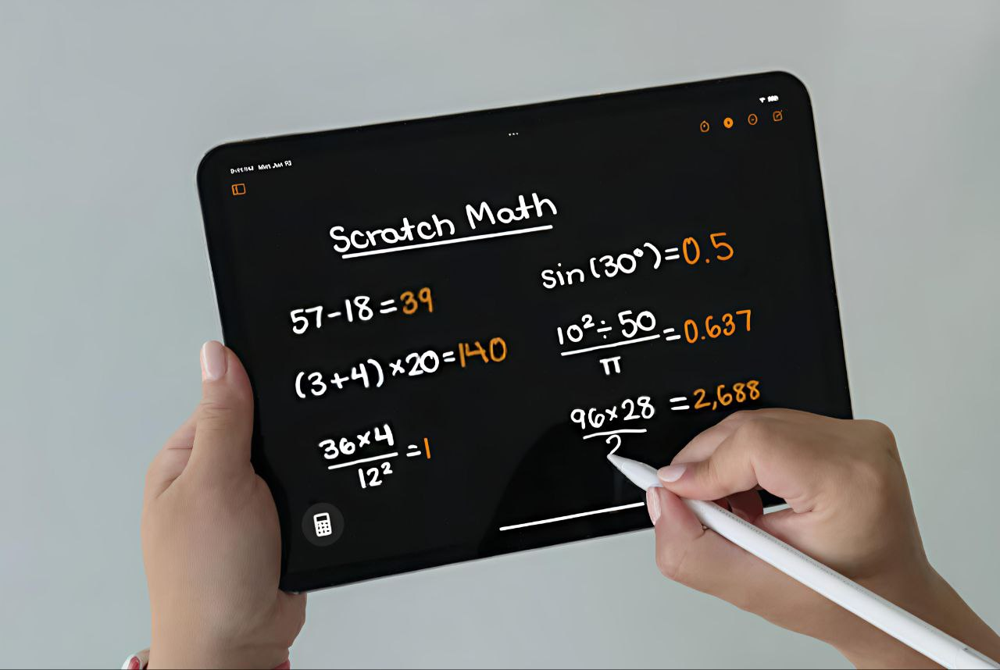

Рукописне введення математичних формул

Ця інтерактивна веб-сторінка створена для зручного та інтуїтивного рукописного введення математичних формул.
За допомогою спеціального поля для малювання (Canvas), користувачі можуть буквально "писати" формули від руки — як на аркуші паперу. Після цього система автоматично розпізнає введений рукописний текст і миттєво перетворює його у структурований математичний формат — наприклад, LaTeX або MathML.Дана функція зручна для
1. Школярів та студентів
які працюють з алгеброю, інтегралами або диференціальними рівняннями
2. Викладачів
які готують навчальні матеріали
3. Користувачів, що часто
працюють з формулами та хочуть швидко перетворити складну формулу на цифровий формат без клопіткої верстки з клавіатури.